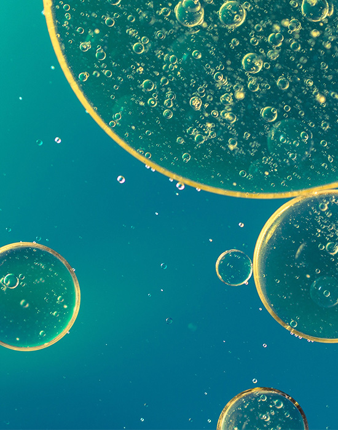
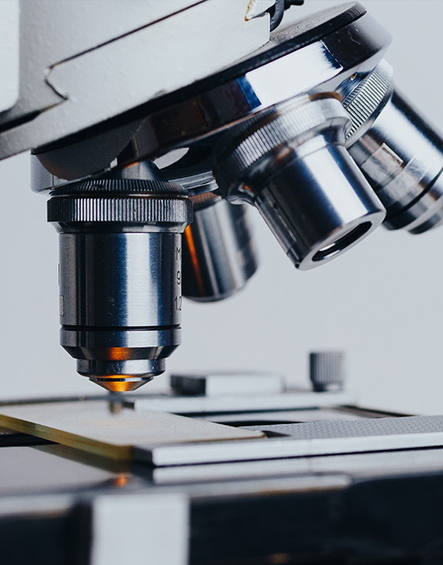

HOME > R&D > 연구활동
연구활동
유한의 R&D 센터와 관련정보를 소개해드립니다.
유한의 R&D는 시장지향적 신제품과 새로운 시장을 개척하는 신약개발을 위해
우수한 인력과 시설을 갖추고 오늘도 미래로 나아가고 있습니다.

- 01.전략질환군에 대한 선택과 집중
- 유한양행은 기존 치료제의 한계를 극복하고 환자 치료에서 의학적 가치를 개선할 수 있는 의약품 연구개발에 전력을 다하고 있습니다. 또한, 빠르고 효율적인 연구개발을 위하여 암, 대사, 그리고 중추신경계 질환을 세 가지 전략질환 영역으로 선정하여, 연구개발을 집중하고 있습니다. 전략질환 선정은 시장성, 의학적 미충족 요구(clinical unmet need), 유한양행의 주 역량 분야를 고려하였으며, 특히 암 및 대사 질환에서는 혁신 신약들이 글로벌 회사에 기술수출 혹은 공동연구개발이 진행되어, 현재 전세계 시장을 목표로 개발되고 있습니다. 또한, 현재까지 질병조절 치료제가 전무한 퇴행성 신경계 질환의 파이프라인을 확장하며 다양한 시도를 하고 있습니다.

- 02.개방형 혁신을 통한 성공 확률 제고
- 유한양행은 내부 연구자원에 대한 지속적인 투자와 더불어, 열린 마음으로 외부기관과 협력을 통한 공동 연구개발 및 사업화를 지속적으로 추진해 오고 있습니다. 특히, 파이프라인 강화와 신약개발 성공률을 높이기 위하여, 국내외 대학교, 연구기관 및 벤처기업과, 유망한 약물표적과 치료제 탐색연구를 위한 공동연구 또는 기술도입을 지속적으로 확대하고 있습니다. 또한, 효율적인 전세계 시장 진입을 위해 글로벌 기업들과 협력관계를 맺어 성공적으로 공동개발을 이어나가고 있습니다. 현재 유한양행의 신약 연구과제 중 절반 이상이 외부협력을 통하여 진행되고 있습니다. 이러한 개방형 혁신은 파이프라인 확대와 성공률 증대를 통해 미래 가치를 제고시킬 것이며, 실제로 다양한 결실의 일환으로 글로벌 수준 R&D를 향해 가속페달을 밟게 한 유한양행의 중요한 전략입니다.
- 03.글로벌 파트너쉽을 통한 연구개발 역량 강화
- 유한양행은 2018년 이후 얀센바이오테크사, 베링거잉겔하임사, 길리어드사 등 여러 글로벌 주요 제약기업에 다양한 질환군의 혁신신약 후보약물의 잠재력에 대한 가치를 인정받아 총 5건의 기술수출 및 공동연구개발 계약을 체결하였으며, 밀접한 관계 속에서 협력 연구를 진행 중에 있습니다. 이러한 글로벌 파트너사와의 물질 최적화 연구, 전임상연구, 임상시험, 약물생산, 규제과학 등 신약개발에 필요한 전 분야에 걸쳐, 글로벌 혁신신약 연구개발에 필요한 최상의 노하우와 전략에 대한 경험과 기술력을 확보해 나가고 있습니다. 2026년 유한양행 설립 100주년을 바라보고 있는 유한양행은 이러한 노력들을 통해 R&D중심 글로벌 혁신신약 개발 회사로서 여러 질병으로 고통받는 환자들에게 소중한 희망이 되기를 고대하고 있습니다.